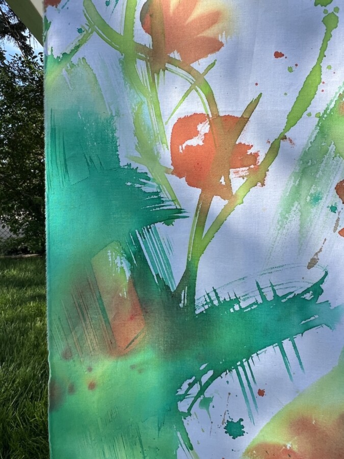

Karen Azarnia: Take It Slow
Karen Azarnia
Take It Slow
Solo Exhibition – Cultivator at Bray Grove Farm
Memorial Day, Monday, May 25, 2026, 2-5pm
Cultivator is pleased to present Karen Azarnia’s exhibition, Take It Slow, during Bray Grove Farm’s Spring Farm Day. This exhibition coincides with Regin Igloria’s exhibition with Cultivator..
Please rsvp to join us on Memorial Day, Monday, May 25th from 2-5pm for art, conversation, light refreshments, and an afternoon on our small holistic farm. You can drop in anytime between 2-5pm. We are tentatively scheduling a short tour of the farm with Brian and Joanne at 3pm. Bray Grove Farm is located 70 miles southwest of Chicago in Grundy County. To confirm your attendance and receive directions and parking information, kindly email joanne@cultivatorarts.com. —–
This work is an invitation to slow down. A decidedly analog installation, it blurs the boundary between painting and sculpture, pushing against the digital and the expedient.
Based on indigenous plants native to the prairie region, the work also pulls from memories of the landscape I experienced growing up in South Florida, and from summertime trips to visit both my Armenian and American grandparents living in the Midwest. The lush color and gestural mark-making seek to evoke feelings of growth and abundance.